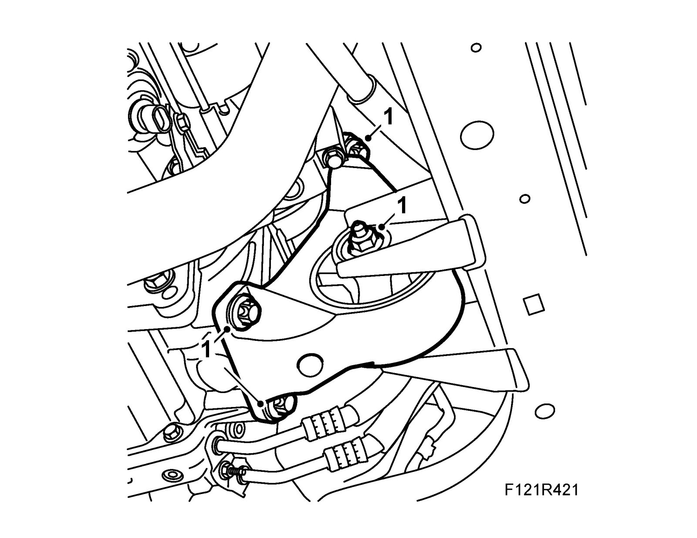
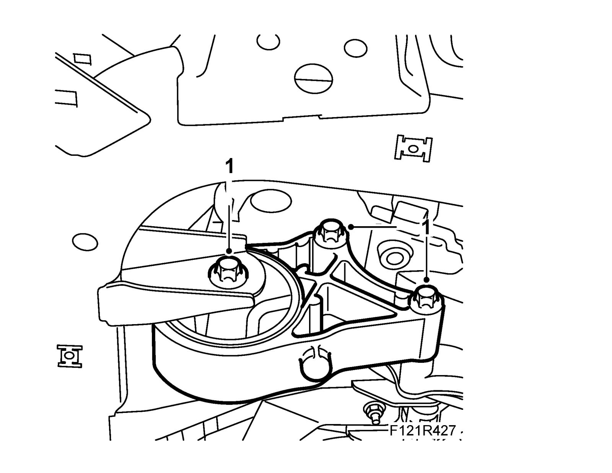

Front Torque Arm
Front torque armTo remove
1. Raise the car.
2. Remove the front torque arm.
Aut:
Man:
To fit
1. Fit the front torque arm.
Tightening torque, nut and bolt 60 Nm +90° (44 lbf ft +90°)
Tightening torque bolt to gearbox 80 Nm (59 lbf ft)
Aut:

Man:

2. Lower the car.